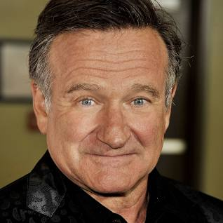
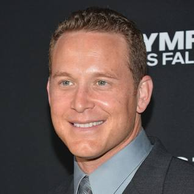

Good Will Hunting
| Imdb rating | Duration | Release Year | |
|---|---|---|---|
| ⭐️ 8.3/10 | 2h 6m | 1997 |

Description of the movie:
Will Hunting, a genius in mathematics, solves all the difficult mathematical problems. When he faces an emotional crisis, he takes help from psychiatrist Dr Sean Maguireto, who helps him recover.
Top cast:
- 
- 
-

Director Gus Van Sant
Writers Matt Damon · Ben Affleck
Stars Robin Williams · Ben Affleck · Matt Damon